Project 2: Fun with Filters and Frequencies!
The goal of this project was to explore the use of filters on images. We first used convolution to blur images and detect edges, and then used low and high frequencies for sharpening, hybrid images, and multiresolution blending.
Part 1.1: Convolutions from Scratch
Convolution is implemented using four for loops. The first two loops iterate across the image, while the inner two loops multiply and add the pixels under the kernel. In the version with only two loops, NumPy handles the inner multiplication and summing. Both flip the kernel horizontally and vertically before applying it.
Both implementations also use zero padding. In same mode, the output keeps the dimensions of the original image. In full mode, it has shape (H + Kh − 1, W + Kw − 1). For kernels with an even number of rows or columns, the extra padding pixel is placed on the top or left (matching SciPy). Since pixels outside the image are treated as black, the blur becomes darker near the border and the difference filters respond to the image boundary.
My selfie was converted to grayscale and convolved with a 9 × 9 box filter, Dₓ = [1, −1], and Dᵧ = Dₓᵀ. The box filter averages the nearby pixels, while the difference filters show changes in brightness along each direction.
def pad_for_convolution(image, kernel, mode="same"):
# Zero-pad for "same" or "full", then flip the kernel for convolution.
image = np.asarray(image, dtype=np.float64)
kernel = np.asarray(kernel, dtype=np.float64)
kh, kw = kernel.shape
if mode == "same":
# Put the extra pixel on top/left for even kernels to match SciPy.
padding = ((kh // 2, (kh - 1) // 2), (kw // 2, (kw - 1) // 2))
else:
padding = ((kh - 1, kh - 1), (kw - 1, kw - 1))
return np.pad(image, padding, mode="constant"), kernel[::-1, ::-1]
def convolve_four_loops(image, kernel, mode="same"):
padded, flipped = pad_for_convolution(image, kernel, mode)
kh, kw = flipped.shape
h, w = padded.shape[0] - kh + 1, padded.shape[1] - kw + 1
result = np.zeros((h, w), dtype=np.float64)
for y in range(h):
for x in range(w):
for ky in range(kh):
for kx in range(kw):
result[y, x] += padded[y + ky, x + kx] * flipped[ky, kx]
return result
def convolve_two_loops(image, kernel, mode="same"):
padded, flipped = pad_for_convolution(image, kernel, mode)
kh, kw = flipped.shape
h, w = padded.shape[0] - kh + 1, padded.shape[1] - kw + 1
result = np.zeros((h, w), dtype=np.float64)
for y in range(h):
for x in range(w):
result[y, x] = np.sum(padded[y:y + kh, x:x + kw] * flipped)
return resultbox = np.ones((9, 9), dtype=float) / 81
Dx = np.array([[1.0, -1.0]])
Dy = Dx.T
blurred = convolve_two_loops(selfie, box)
dx = convolve_two_loops(selfie, Dx)
dy = convolve_two_loops(selfie, Dy)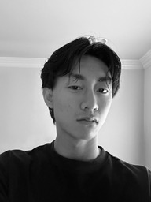
Grayscale selfie
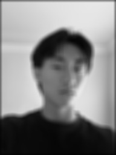
9 x 9 box filter
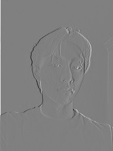
Dₓ response
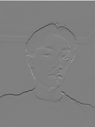
Dᵧ response
Both implementations are compared with scipy.signal.convolve2d on the same 192 × 256 grayscale selfie. Each runtime is the median of three runs. The box filter takes about 0.899 s with four loops, 0.085 s with two loops, and 0.0040 s with SciPy. The NumPy results match SciPy to within 3 × 10−15. The timings and errors for all three filters are available in timings.csv.
The two-loop version is faster for the box filter because NumPy handles the inner computation. For the small difference filters, the repeated NumPy calls take more time than the short inner loops. SciPy is the fastest for all three filters, using the same zero padding.
Part 1.2: Finite Difference Operator
The cameraman image is convolved with Dₓ = [1, −1] and Dᵧ = Dₓᵀ. These measure the brightness difference from the left and upper neighbors. The two derivatives are then combined using magnitude = sqrt(dx² + dy²). Symmetric padding reflects the image at the border so the black padding does not create extra edges.
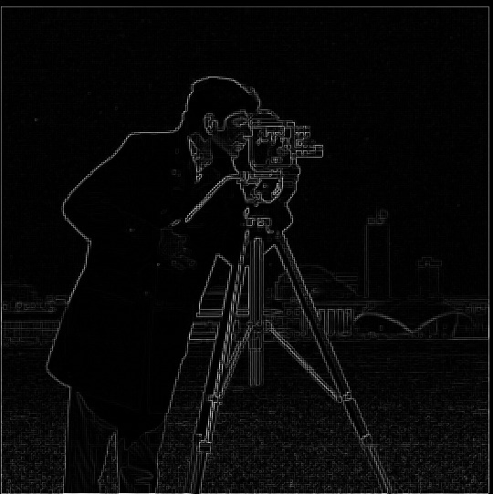
Gradient magnitude
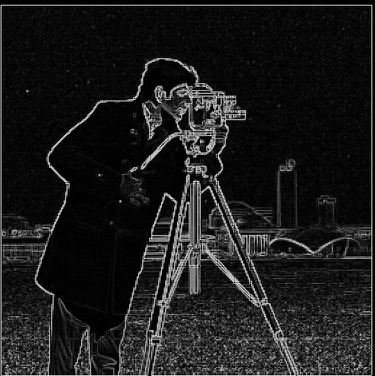
Magnitude × 4 for visibility
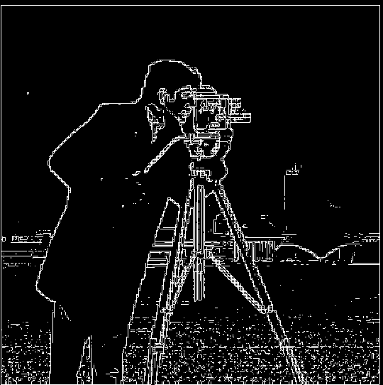
Edges, threshold 0.12
Choosing a threshold
At a threshold of 0.08, much of the grass texture remains. At 0.18, weaker edges around the camera and tripod disappear. I used 0.12 to keep the person and main tripod edges while removing some of the smaller changes in the ground. Some texture and the thin border in the original image are still visible.
Part 1.3: Derivative of Gaussian
A 13 × 13 Gaussian filter with σ = 2 is created using cv2.getGaussianKernel(). The 1D Gaussian is multiplied by its transpose to form a 2D filter. The image is first blurred with this filter, then the same difference operators are applied.
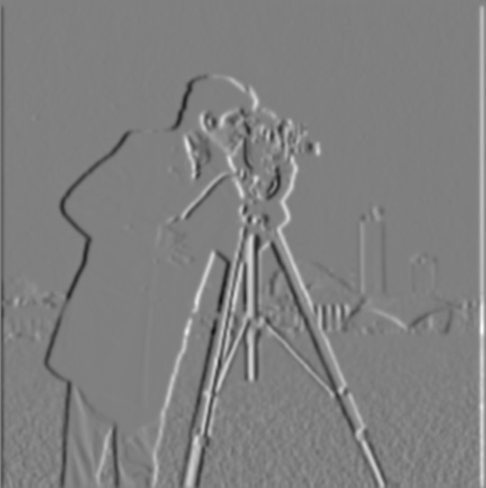
Smoothed x derivative
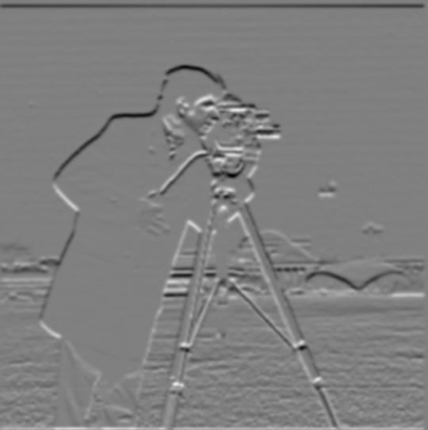
Smoothed y derivative

Gaussian then finite differences
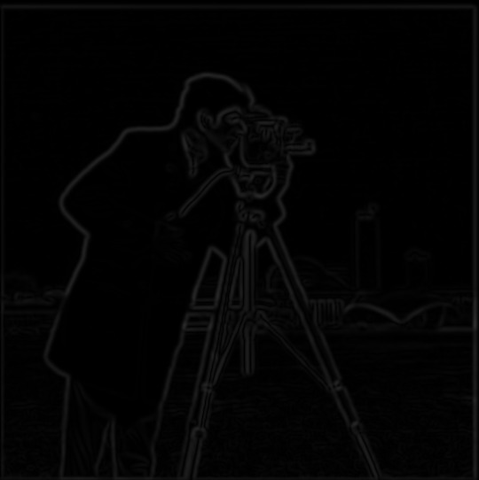
DoG gradient magnitude
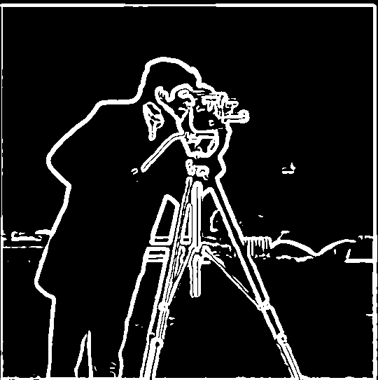
Edges, threshold 0.035
The Gaussian is also convolved with Dₓ and Dᵧ using mode="full" to create the derivative of Gaussian filters. This combines blurring and differentiation into one filter: (I ∗ G) ∗ D = I ∗ (G ∗ D). To compare the two methods, the image is padded once at the start and both methods use valid convolutions. This keeps the boundary samples the same.
The two methods produce the same result up to floating-point rounding. The maximum difference is 1.40e-15 for the derivatives and 1.73e-15 for the gradient magnitudes. Their edge maps at a threshold of 0.035 are identical.
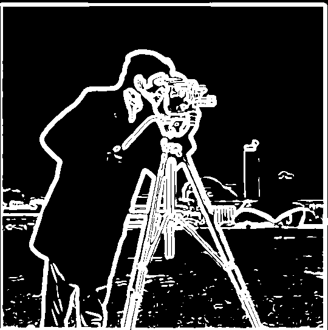
Smoothed threshold 0.020
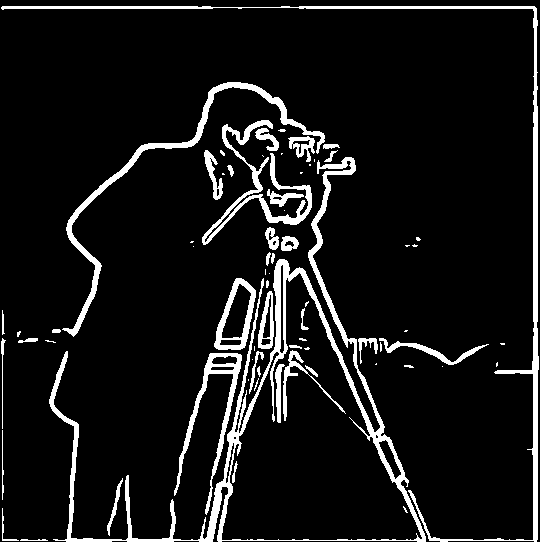
Smoothed threshold 0.050
Blurring removes much of the grass texture and makes the main outlines more continuous, though some fine details become weaker. Since the smoothed derivatives have smaller values, the threshold is lowered to 0.035. A threshold of 0.020 keeps more ground texture, while 0.050 removes some weaker object edges. The magnitude comparisons use the same display scale.
Part 2.1: Image Sharpening
Sharpening first separates the high frequencies by subtracting a Gaussian blur from the original image. A scaled copy of these high frequencies is then added back to make the edges stronger:
Isharp = I + α(I − G ∗ I) = [(1 + α)δ − αG] ∗ I.
The expression on the right gives an unsharp mask kernel that can be applied with one convolution per color channel. These examples use σ = 2 and a 13 × 13 Gaussian. The kernel sums to one, so constant brightness is preserved. The high-frequency images are displayed as 0.5 + 3(I − G ∗ I) to make the small changes easier to see.
Taj Mahal
Building photo


As α increases, the windows, rooflines, and stone edges become stronger. At α = 1, the details are clearer without becoming too harsh. At α = 4, strong outlines and exaggerated texture appear. Across all four amounts, the single-kernel result matches the subtract-and-add result to within 4.88e-15 for both images.
Blur a sharp image, then sharpen it again
The building photo is deliberately blurred, then sharpened again. Sharpening restores some contrast around the tower and roofline, but the small windows and stone details remain softer than in the original. Increasing the remaining high frequencies cannot fully recover the detail lost during blurring. The mean squared error decreases from 0.006421 after blurring to 0.004868 after sharpening and display clipping.
Part 2.2: Hybrid Images
Hybrid images combine the low frequencies of one image with the high frequencies of another: H = G_low ∗ A + gain × (B − G_high ∗ B). The fine details are easier to see up close, while the smoother image becomes clearer from farther away. These examples use grayscale and a high-frequency gain of 1.25.
The eye centers are first aligned using translation, rotation, and scaling. Both images are placed on the same canvas using the landmarks in main.py. The high-pass component keeps its positive and negative values when added to the low-pass image. Values are clipped only when saving the result.
Derek + Nutmeg
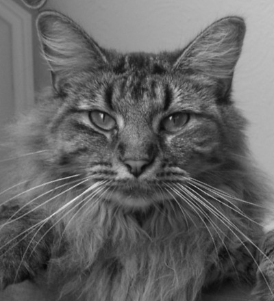
Nutmeg, aligned
For Derek and Nutmeg, σ low = 9 and σ high = 4. Nutmeg’s fur and whiskers are visible in the full-size result, while Derek’s face is easier to see in the 20% preview. The eyes align, but the different cheek and face shapes still produce some overlapping features. The high-pass image and its Fourier transform are shown before applying the gain.
Cutoff selection
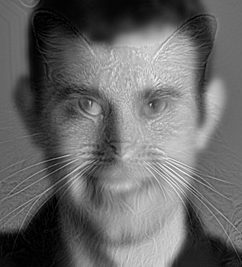
σ low = 5, σ high = 2

σ low = 9, σ high = 4 — selected
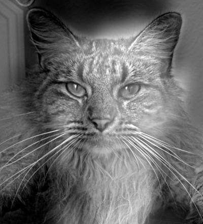
σ low = 14, σ high = 6
The three cutoff trials use the same gain of 1.25. With (5, 2), Derek keeps sharper features and Nutmeg contributes mostly fine texture. With (14, 6), Derek becomes more blurred and broader cat features appear. I used (9, 4) to keep the low-frequency face recognizable while still showing the cat’s detail. The Gaussian filters have gradual frequency cutoffs controlled by their sigma values.
Frequency analysis
The Fourier transforms are displayed using log1p(abs(fftshift(fft2(image)))). Low frequencies are at the center and high frequencies are farther away. The low-pass result concentrates near the center, while the high-pass result suppresses the center. The hybrid contains both. All five spectra use the same display scale and are calculated before clipping.
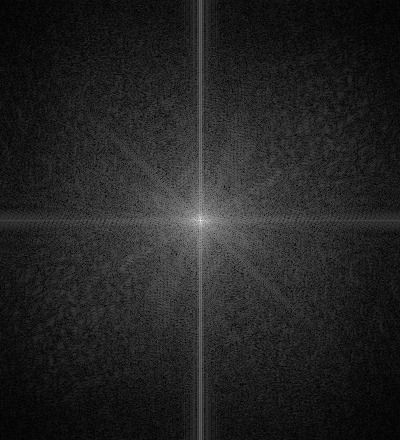
FFT of aligned Derek
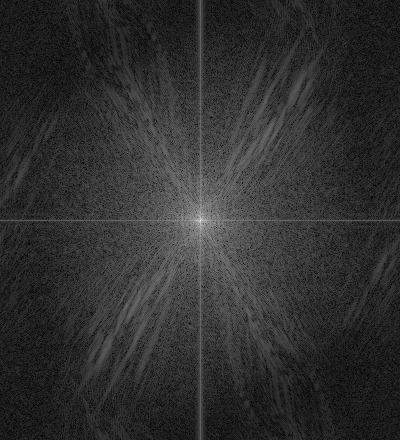
FFT of aligned Nutmeg
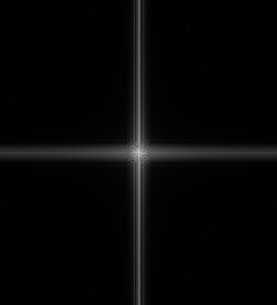
FFT of filtered Derek
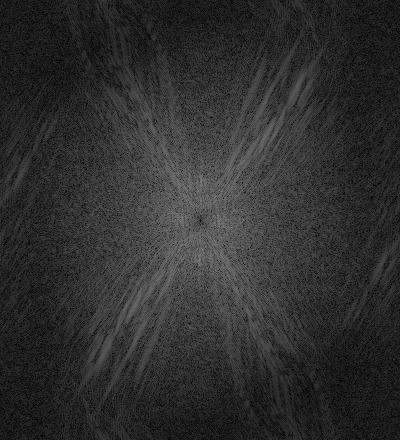
FFT of filtered Nutmeg
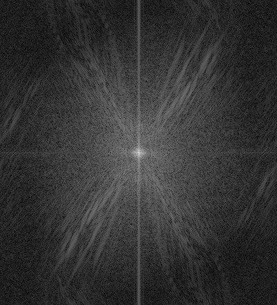
FFT of hybrid
Headshot + Miya
σ low = 9, σ high = 3, high-frequency gain = 1.25.
For this pair, my headshot supplies the low frequencies and Miya supplies the high frequencies. The cat’s eyes, fur, and whiskers appear over the smoother face. In the small preview, my face becomes easier to recognize. The eyes are aligned, but the nose and mouth do not line up because the face shapes are different.
Dog + Cat
σ low = 6, σ high = 2, high-frequency gain = 1.25.
The dog supplies the low frequencies and the cat supplies the high frequencies. The cat’s whiskers and eye outlines are clearer nearby, while the dog’s broad muzzle remains visible in the small preview. Some overlapping nose features remain because aligning the eyes cannot also match the different face proportions.
Part 2.3: Gaussian and Laplacian Stacks
The Gaussian stack starts with the original image. Each level blurs the previous one using σ = 2, 4, 8, 16, and 32, without downsampling. All six levels remain 300 × 300 pixels.
The Laplacian stack is formed by subtracting the next Gaussian level from the current one: Lᵢ = Gᵢ − Gᵢ₊₁. The final level keeps the remaining low frequencies. Adding all six levels reconstructs the original image, with a maximum error of 1.11e-16 for the apple. The stacks are built using Gaussian filters and subtraction.
Apple Gaussian stack
Orange Gaussian stack
Apple Laplacian stack

Orange Laplacian stack

The apple and orange use the same display scale at each Laplacian level, with zero shown as gray. The last level is displayed as a normal image. Fine levels contain the peel texture, while coarser levels show larger changes in lighting and color.
Oraple blending by scale
The layout below follows Figure 3.42 in Szeliski. The first three rows show masked levels 0, 2, and 4 for the apple, orange, and their combination. The last row sums all six levels, including the remaining low frequencies, to reconstruct the blend.
Part 2.4: Multiresolution Blending
A mask determines which image is used at each location. White selects image A and black selects image B. The mask is blurred into a Gaussian stack using the same sigma values as the image stacks. Each mask level is then used to weight the corresponding Laplacian bands, and the combined bands are added together. This gives a narrow transition for fine details and a wider transition for larger brightness changes.
Apple + orange


Gaussian mask stack


The direct cut leaves a visible brightness change down the middle. Blurring the mask at each level softens the seam while keeping the apple and orange textures on either side.
Custom blend 1: plane view through a rock window


For this blend, the plane photo is placed inside the rock window. A polygon mask follows the uneven edge of the opening, and the plane photo is resized and cropped to fit. White selects the plane view and black keeps the rock. The stack uses σ = 1, 2, 4, and 8. Compared with the direct cut, the blend softens the brightness change around the window.
Custom blend 2: mirrored city views


For the mirror effect, city2 is used on top and city is used on the bottom. City2 is already upside down, and both photos are resized to 400 × 600 to keep their proportions. A horizontal mask selects the two halves. With σ = 2, 4, 8, and 16, the sky blends across the middle while the buildings stay sharp.
Rock window blend: contributions by scale
The rock window blend is shown by scale below. The first three rows show fine band 0, middle band 2, and the final low-frequency level 4. The bottom row reconstructs the result from all five levels. The masked inputs above show where each source is selected. This follows the layout of Figure 10 in Burt and Adelson.


What I Learned
The main thing I learned was how the same Gaussian blur can be used for several different effects. Subtracting a blur gives the high frequencies, which can be added back for sharpening or combined with another image. The hybrid images also showed how important the balance between the two components is. Too much blur makes the low-frequency face harder to recognize, while too much high-frequency gain makes the detail look harsh.
Running the Code
- Open the
proj2/folder. Filtering code is in part1.py, frequency applications are in part2.py, and the images and settings are selected in main.py. - Keep the input images in
proj2_data/. - Install the dependencies with
python -m pip install -r requirements.txt. - Run
python main.pyto generate the images and timings.csv inassets/. The DoG comparison, reconstruction error, and blur evaluation are printed in the terminal. - Open
index.htmlto view the results.